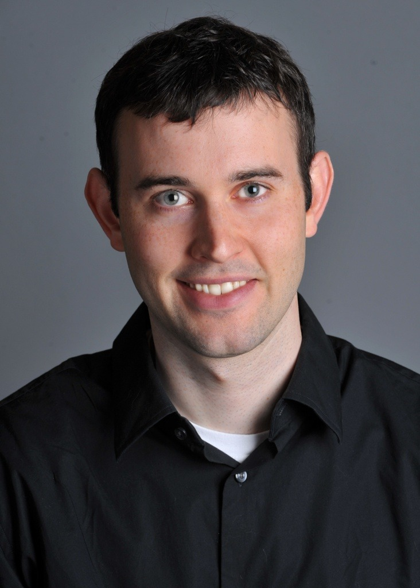
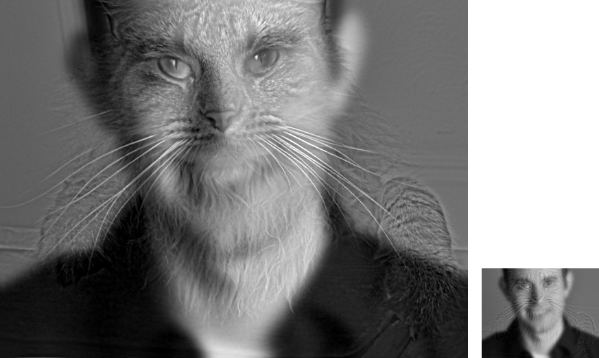
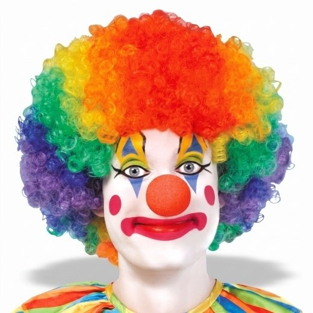
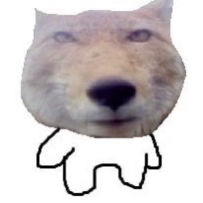
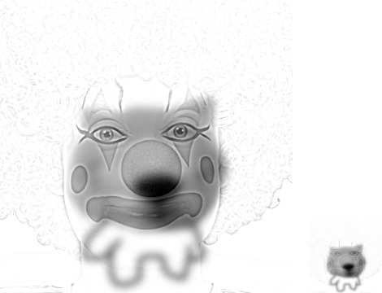
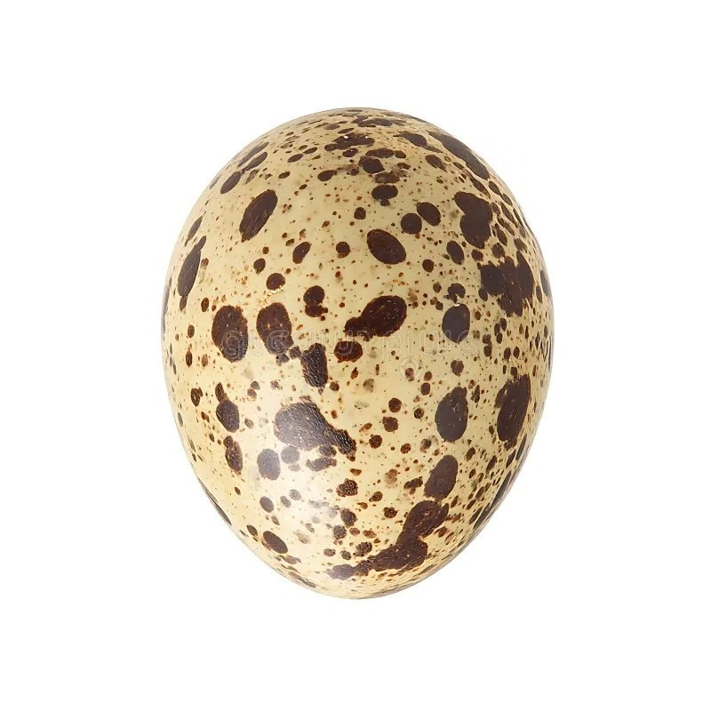
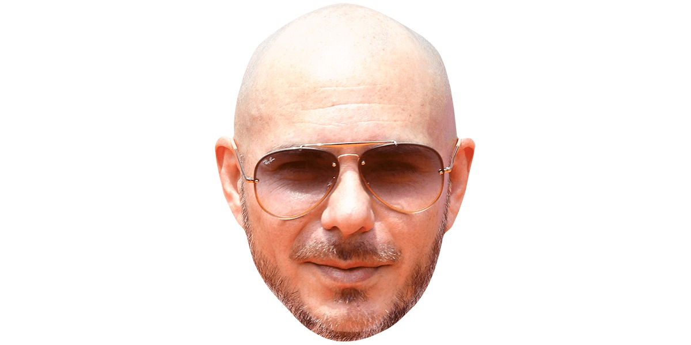
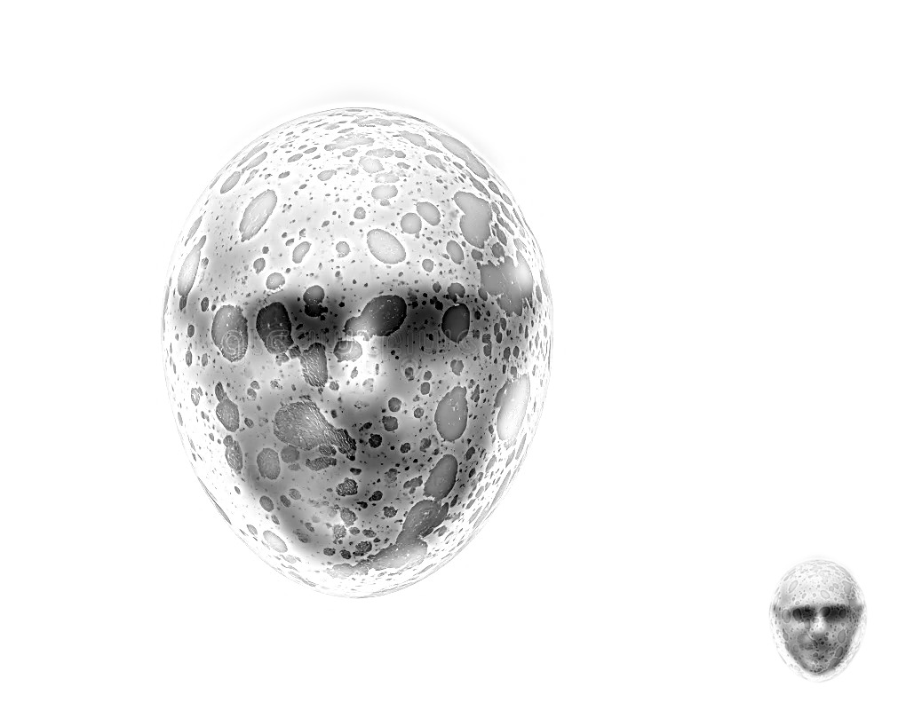

Fun with Filters and Frequencies
Building filters up from convolution, then using them to sharpen, hybridise and blend images.
Other than Part 1.1, all the filtering uses scipy.signal.convolve2d with
mode="same" and boundary="symm", and every Gaussian comes from
cv2.getGaussianKernel with a half-width of 3 sigma (so sigma = 2 gives a 13 x 13 kernel).
Part 1.1: Convolutions from scratch
Main idea: flip the kernel, slide it over the image, and at each position multiply the
overlapping values and add them up. Without padding, the kernel can only sit where it fully fits,
so the output would be smaller than the image. So the image is zero padded first. For
"same" output (same size as the image) a k x k kernel needs (k - 1) / 2 zeros on each
side, and for "full" output (every position where the kernel overlaps the image at
all) it needs k - 1.
def pad(im, kernel_shape, mode="same"):
kh, kw = kernel_shape
if mode == "full":
widths = ((kh - 1, kh - 1), (kw - 1, kw - 1))
else:
widths = ((kh // 2, (kh - 1) // 2), (kw // 2, (kw - 1) // 2))
return np.pad(im, widths)
The four loop version goes over every output pixel (two loops), and for each one, every kernel
entry (two more loops). The kernel is flipped with [::-1, ::-1] first, since without
the flip it would be correlation instead of convolution.
def conv_four_loops(im, kernel, mode="same"):
flipped = kernel[::-1, ::-1]
kh, kw = flipped.shape
padded = pad(im, flipped.shape, mode)
out = np.zeros((padded.shape[0] - kh + 1, padded.shape[1] - kw + 1))
for i in range(out.shape[0]):
for j in range(out.shape[1]):
total = 0.0
for m in range(kh):
for n in range(kw):
total += padded[i + m, j + n] * flipped[m, n]
out[i, j] = total
return outThe two loop version replaces the inner two loops with one elementwise multiply between the window and the kernel, and then a sum.
def conv_two_loops(im, kernel, mode="same"):
flipped = kernel[::-1, ::-1]
kh, kw = flipped.shape
padded = pad(im, flipped.shape, mode)
out = np.zeros((padded.shape[0] - kh + 1, padded.shape[1] - kw + 1))
for i in range(out.shape[0]):
for j in range(out.shape[1]):
out[i, j] = np.sum(padded[i : i + kh, j : j + kw] * flipped)
return outThe kernels are a 9 x 9 box filter (every entry is 1/81, so it takes the average) and the two finite differences:
BOX_9 = np.ones((9, 9)) / 81
D_X = np.array([[1, 0, -1]], dtype=float)
D_Y = D_X.T
Both versions were compared with convolve2d(im, kernel, mode) (which also zero
pads) on the cameraman image in both modes, using the three kernels above and a random 4 x 5 kernel.
All of them match scipy to within about 3e-15, which is just floating point rounding.
My photo with the three filters


The box filter blurs everything evenly. Dx picks up vertical edges (like the sides of my face and fingers) and Dy picks up horizontal edges (like my eyebrows and mouth). The derivatives can be negative, so 0 is shown as mid grey: brighter than grey means the image gets brighter going right (or down), and darker than grey means it gets darker.
Runtime
Times on the 534 x 534 cameraman image, in seconds:
| kernel | mode | four loops | two loops | scipy |
|---|---|---|---|---|
| 9 x 9 box | same | 11.21 | 1.98 | 0.054 |
| 9 x 9 box | full | 12.03 | 2.23 | 0.071 |
| Dx | same | 0.52 | 1.99 | 0.008 |
| Dx | full | 0.54 | 1.98 | 0.005 |
| Dy | same | 0.62 | 1.92 | 0.009 |
| Dy | full | 0.59 | 1.93 | 0.009 |
For the 9 x 9 box, two loops is about 5 to 6 times faster than four loops, since the 81 Python
multiply-adds per pixel become one numpy call. Scipy is then about 35 times faster than two loops,
since all of its looping is done in compiled code. For Dx and Dy though, four
loops is actually faster than two loops. The kernel only has 3 entries, so the inner loops are
tiny, while the two loop version still has to slice a window and call np.sum at every
pixel. That costs about 2 s no matter what the kernel is, so two loops only wins when the kernel
is big enough. Same and full take about the same time, since full only adds k - 1 rows and
columns.
Boundaries
With zero padding, part of the kernel sits on zeros near the border. For the box filter this
averages black into the edge pixels, which is the dark rim round my blurred photo above. For
Dx and Dy it makes a fake edge round the whole image, since the image
suddenly drops to 0 there. Both scratch versions do exactly what scipy does by default
(boundary="fill", fillvalue=0). Scipy can also mirror the image instead
(boundary="symm"), which gets rid of the rim.

Part 1.2: Finite difference operator
Main idea: an edge is where the brightness changes quickly. So convolving the cameraman with Dx and Dy gives the partial derivatives Ix and Iy, and then the gradient magnitude sqrt(Ix2 + Iy2) is large wherever the brightness changes quickly in any direction.


To turn this into an edge image, every pixel with a gradient magnitude above a threshold is kept. The pixel values are in [0, 1], so the thresholds are in the same units:

At 0.1 (14.7% of pixels) the grass is covered in speckles, and at 0.2 there are still a lot of them. At 0.3 and 0.4 the grass is clean, but the tripod legs start breaking up and most of the buildings in the background disappear. So 0.25 (4.8% of pixels) was chosen, where the outline of the man, the camera and all three tripod legs are still complete, and some of the buildings are still there. A few specks are left in the grass, but keeping the real edges whole was more important than removing every bit of noise.

Part 1.3: Derivative of Gaussian (DoG) filter
The finite difference only compares neighbouring pixels, so noise (like the texture of the
grass) looks just as much like an edge as a real outline. So the image is first blurred with a
Gaussian G, made from cv2.getGaussianKernel(13, 2) and its outer product with itself
(sigma = 2, 13 x 13), and then the derivatives of the blurred image are taken.
def gaussian_kernel_1d(sigma):
size = 2 * int(np.ceil(3 * sigma)) + 1
return cv2.getGaussianKernel(size, sigma).ravel()
def gaussian_kernel_2d(sigma):
g = gaussian_kernel_1d(sigma)
return np.outer(g, g)


Blurring spreads each change in brightness over several pixels, so the gradient gets smaller (the largest value drops from 0.91 to 0.30). This means the old threshold of 0.25 would throw away almost everything, so it was lowered to 0.1 (7.1% of pixels), picked the same way as before.
What differences do you see?
With the blur, the noise in the grass is gone and the edges are continuous lines instead of broken dotted ones, so the outline of the man and the tripod legs are much cleaner. On the other hand, the edges are thicker and less precise, thin objects like the tripod legs show up as two parallel lines (one for each side of the leg), and small, faint details like the buildings in the background are weaker, since the blur smooths them out along with the noise.
DoG filters
Convolution is associative, so (I * G) * Dx = I * (G * Dx). This means the
Gaussian can be convolved with the derivative first, giving the same result with only one
convolution on the image per direction. The DoG filters are built with mode="full" so
nothing gets cut off (13 x 15 for x and 15 x 13 for y).
dog_x = convolve2d(g, D_X, mode="full")
dog_y = convolve2d(g, D_Y, mode="full")


This gives the same result as blurring and then taking the differences. The largest difference in gradient magnitude between the two is 9.9e-16, and after thresholding, 0 pixels are different.
Part 2.1: Image "sharpening"
Main idea: a Gaussian is a low pass filter (blurring keeps the slow changes in brightness and removes the fast ones), so subtracting the blurred image from the original leaves only the high frequencies (edges and fine texture). An image looks sharper when its high frequencies are stronger, so the unsharp mask adds alpha times the high frequencies back onto the image:
sharpened = I + alpha (I - I * G) = I * ((1 + alpha) e - alpha G)
where e is the unit impulse (a kernel that is 1 in the middle and 0 everywhere else, so convolving with it does nothing). The second form is just one kernel, so the whole thing is a single convolution.
def unsharp_mask_kernel(sigma, alpha):
g = gaussian_kernel_2d(sigma)
impulse = np.zeros_like(g)
impulse[g.shape[0] // 2, g.shape[1] // 2] = 1
return (1 + alpha) * impulse - alpha * g
def sharpen(im, sigma, alpha):
return np.clip(convolve(im, unsharp_mask_kernel(sigma, alpha)), 0, 1)The single kernel was compared with doing the three steps separately (blur, subtract, add back), and the largest difference is 1.2e-15 on the Taj Mahal and 2.4e-15 on the other image.
Taj Mahal (sigma = 2, alpha = 1)


Changing the sharpening amount


At 0.5 there is only a small change. At 1 and 2 the carvings, windows and railings are clearly sharper without looking unnatural. At 5 there are bright halos along the outline of the dome, and the sky and path look grainy, since the JPEG noise is also high frequency so it gets boosted along with the real details. At 10 it looks harsh and overprocessed.
My image: Point Lobos (sigma = 3, alpha = 1)
This photo has about four times as many pixels as the Taj Mahal one, so a wider Gaussian (sigma = 3, a 19 x 19 kernel) was used to get a similar range of detail.


It is the same pattern as the Taj Mahal. The rocks and the ripples in the water get more texture as alpha goes up, and at 5 and 10 the water looks noisy and the colours at the edges look oversaturated.
Blur, then sharpen again
The (sharp) Point Lobos photo was blurred with sigma = 3, and then sharpened again with the same Gaussian. PSNR (peak signal to noise ratio, higher means closer) measures how close each result is to the original. Here is a close up of the rocks:

| image | PSNR vs original |
|---|---|
| blurred | 27.2 dB |
| resharpened, alpha = 1 | 28.3 dB |
| resharpened, alpha = 2 | 28.8 dB |
| resharpened, alpha = 4 | 27.7 dB |
Sharpening does help, since the outlines of the rocks and the crack down the middle get their contrast back and it looks less blurry than the blurred version. But it still does not look like the original. The fine texture (the grain of the rock, the small ripples and the birds on the rocks at the back) does not come back at all. This is because unsharp masking can only boost frequencies that are still in the image, and the sigma = 3 blur has already brought the finest ones down to almost zero, so there is nothing left to boost. Increasing alpha to 4 does not bring them back either, it just adds halos, which is why the PSNR goes back down.
Part 2.2: Hybrid images
Hybrid images (Oliva, Torralba and Schyns, SIGGRAPH 2006) look different depending on how far away you are. Up close the high frequencies dominate what we see, but from far away only the low frequencies are visible. Main idea: take the low frequencies of one image (a Gaussian blur) and the high frequencies of another image (the image minus its Gaussian blur, which is the impulse minus Gaussian filter), and add them together.
hybrid = k (I1 - I1 * Gsigma_high) + I2 * Gsigma_low
def high_pass(im, sigma):
return im - blur(im, sigma)
def hybrid_image(im_high, im_low, sigma_high, sigma_low, gain=1.0):
return np.clip(gain * high_pass(im_high, sigma_high) + blur(im_low, sigma_low), 0, 1)k is a gain on the high frequencies. It is 1 (so it does nothing) for every hybrid except the clown + fox one below.
Aligning
The images are aligned with the starter code, which matches the centre, scale and rotation of
two points on each image (the two eyes for faces, and the left and right edges of Pitbull's head,
matched to points inside the quail egg). align_images was changed so it takes the points
directly instead of clicks, and the black padding it adds is cropped off afterwards. The fox and
Pitbull photos are short cut-outs on white, so they are extended with white before aligning,
otherwise the other image gets cropped away.
Both images are converted to greyscale before making the hybrid, like in the paper.
Derek + Nutmeg: the full process
Nutmeg gives the high frequencies (the whiskers and fur are almost all fine detail) and Derek gives the low frequencies, so up close it should look like a cat and from far away it should look like Derek.




Here is the log magnitude of the Fourier transform at each step (the centre is frequency 0, and further out means higher frequency), all on the same colour scale so they can be compared:

High-passing Nutmeg removes the bright spot at the centre (the low frequencies) and keeps the rest. Low-passing Derek does the opposite, so everything away from the centre becomes much darker. The hybrid's spectrum is the two added together, with Derek in the middle and Nutmeg everywhere else.
Choosing the cutoff frequencies
The cutoff of each Gaussian is taken as the frequency where it lets through half the amplitude. The Fourier transform of a Gaussian with standard deviation sigma is exp(-2 pi2 sigma2 f2), and setting that to 0.5 gives f = 0.187 / sigma cycles per pixel. The low pass keeps what is below its cutoff, and the high pass keeps what is above its cutoff. From trial and error, leaving a gap between the two cutoffs works best (sigma_low about twice sigma_high), so the middle frequencies (which can be seen from both near and far) do not show both images at the same time.

With sigma_low = 4, Derek is too sharp (his eyes and smile are clear even up close), so he competes with the cat. With sigma_low = 16 he becomes a blob, so the cat shows up close but from far away it is hard to tell it is Derek. With sigma_high = 2, only the finest details of the cat are kept (mostly the whiskers), so Derek shows even up close. With sigma_high = 8, the cat's stripes and eye shapes come through as well, and those are big enough to still be seen from further away, so the cat never goes away. This is why sigma_high = 4 and sigma_low = 8 were chosen, since that is where each image shows at its own distance.
| hybrid | high frequencies from | low frequencies from | sigma_high (cutoff) | sigma_low (cutoff) | gain k |
|---|---|---|---|---|---|
| Derek + Nutmeg | Nutmeg | Derek | 4 (0.047 cycles/px) | 8 (0.023 cycles/px) | 1 |
| Clown + fox | clown | fox | 3 (0.062 cycles/px) | 6 (0.031 cycles/px) | 1.5 |
| Quail egg + Pitbull | quail egg | Pitbull | 4 (0.047 cycles/px) | 8 (0.023 cycles/px) | 1 |
The clown + fox hybrid is smaller (360 x 360 after aligning), so the same blur would cover more of the picture. This is why its sigmas are smaller, to keep the cutoffs about the same relative to the size of the faces. The clown is also mostly thin lines on a white background, so with a gain of 1 it was faint up close. Its high frequencies are multiplied by 1.5 to make the eyes, makeup and wig clearer, and sigma_high went from 2 to 3 to keep a bit more of the clown. Going further (sigma_high = 4, sigma_low = 7) made the clown show up even in the zoomed out version, so 3 and 6 were kept.
Up close and from far away
For each hybrid, the full size image is shown next to the same image shrunk to 1/4 of its size (blurred first so it does not alias). Shrinking an image is roughly what happens when you walk away from it, so the full size one shows what you see up close (the high frequency image), and the small one shows what you see from far away (the low frequency image).
Clown + fox
A morph between two faces. Up close you see the clown's makeup, eyes and curly wig, and from far away you see the fox's dark nose and the drawn body underneath.



Quail egg + Pitbull
A quail egg is about the same shape as Pitbull's bald head, so his head is placed inside the egg (at 80% of its width). Up close you see the speckled shell of the egg, and from far away you see Pitbull in his sunglasses. The egg is used for the high frequencies since its speckles are small, sharp spots, while Pitbull can be recognised from his sunglasses and the shape of his head, which are still visible after a heavy blur. The speckles are already strong, so the same settings as Derek + Nutmeg (sigma_high = 4, sigma_low = 8, no gain) work here.



Part 2.3: Gaussian and Laplacian stacks
A Gaussian pyramid blurs and then halves the image at each level, while a stack only blurs and
never shrinks the image, so every level is the same size. In a pyramid, the same kernel applied to
an image that is half the size covers twice as much of the original image. So to make a stack
behave the same way, sigma is doubled at every level instead (level i is level i - 1 blurred with
sigma 2i-1 x sigma). The Laplacian stack is the difference between neighbouring Gaussian
levels (a band of frequencies about one octave wide), and the last level is the blurriest Gaussian
level, so adding up the whole Laplacian stack gives back the original image (the largest error is
1.1e-16). 6 levels starting from sigma = 2 are used, and it is all built from scratch on top of
blur.
def gaussian_stack(im, levels, sigma):
stack = [im]
for i in range(1, levels):
stack.append(blur(stack[-1], sigma * 2 ** (i - 1)))
return stack
def laplacian_stack(im, levels, sigma):
g = gaussian_stack(im, levels, sigma)
return [g[i] - g[i + 1] for i in range(levels - 1)] + [g[-1]]


Recreating Figure 3.42
Szeliski's Figure 3.42 shows levels 0, 2 and 4 of the apple and orange Laplacian stacks, each weighted by the mask at the same level (left and middle columns), and their sum (right column). The last row adds up all the levels. Here is the same figure made with my stacks:

Level 0 only has edges and fine texture (like the dimples on the orange peel), and the mask there is almost a hard line. By level 4 there are only blobs of colour and lighting, and the mask has blurred into a wide, gradual transition. This comes from using the matching level of the mask's Gaussian stack for each level, which is the main idea behind the blending in Part 2.4.
Part 2.4: Multiresolution blending
Main idea: to blend image A into image B with a mask M (1 where A should show), build Laplacian stacks for A and B and a Gaussian stack for M, combine each level as Mi LAi + (1 - Mi) LBi, and then add up the levels. The Gaussian stack of the mask is what smooths the seam. The high frequency levels get a sharp transition (so the details do not overlap and look ghosted), and the low frequency levels get a wide transition (so colour and lighting change gradually and there is no visible seam). For colour images the same mask is used on each of the three channels.
def masked_stacks(im1, im2, mask, levels, sigma):
l1 = laplacian_stack(im1, levels, sigma)
l2 = laplacian_stack(im2, levels, sigma)
gm = gaussian_stack(mask, levels, sigma)
if im1.ndim == 3:
gm = [m[..., None] for m in gm]
return [m * a for m, a in zip(gm, l1)], [(1 - m) * b for m, b in zip(gm, l2)]
def blend(im1, im2, mask, levels, sigma):
parts1, parts2 = masked_stacks(im1, im2, mask, levels, sigma)
return np.clip(collapse(parts1) + collapse(parts2), 0, 1)The oraple


Hikaru + sunflower (irregular mask)
A sunflower grows out of Hikaru's left half of the face (the right side of the photo). The sunflower photo has no background, so the mask is the flower's alpha channel (its outline), kept only on the right of the line from between his eyes down to his chin (tilted, like his head). The flower is scaled up and centred on his left cheek, and its see-through parts are filled with Hikaru's own photo, so the blurry low frequency levels do not pull a halo in round the petals.


6 levels starting from sigma = 2 are used, and the mask is also blurred (sigma = 8) before its Gaussian stack is built. Without that, level 0 of the mask's stack is a hard edge, so the petals look stuck on top of his face. With it, the petal edges and the seam down his face fade into his skin.
Snail + eye (irregular mask)
For the second irregular mask, an eye is placed in the centre of the snail's shell. In code, the eye photo is scaled so the iris is the same size as the innermost whorls of the shell (a scale of about 0.2), and the centre of the iris is moved onto the centre of the spiral. The mask is a circle slightly bigger than the iris, so a thin ring of eyelid is blended in too.


5 levels starting from sigma = 1 are used, so the widest transition stays about the size of the shell's whorls. With 6 levels from sigma = 2 the mask spread well past the shell, and the skin round the eye showed up as a brown haze on the white background.
The Laplacian stack of my favourite
Similar to Figure 10 in the paper, this shows every level of the masked eye (left), the masked snail (middle) and their sum (right), with all the levels added up in the last row.

What I learned
The most important thing I learned is that a lot of image processing becomes simpler when you think of an image as layers of frequencies. Sharpening, hybrid images and blending seem like different things, but they all use the same idea: split the image into low and high frequencies with a Gaussian, and then do something different to each part. Sharpening boosts the high frequencies, hybrid images take the low frequencies of one image and the high frequencies of another, and blending uses a different mask for each band of frequencies. I also learned why sharpening cannot fully fix a blurry photo: the high frequencies are gone, not hidden.